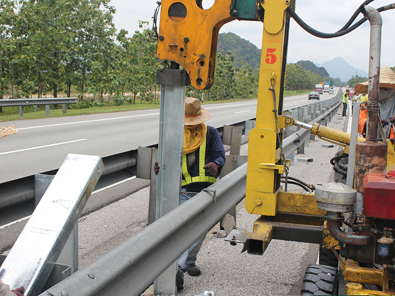
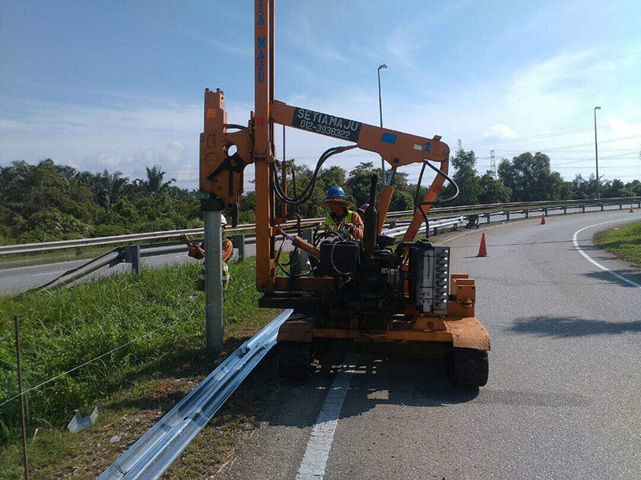
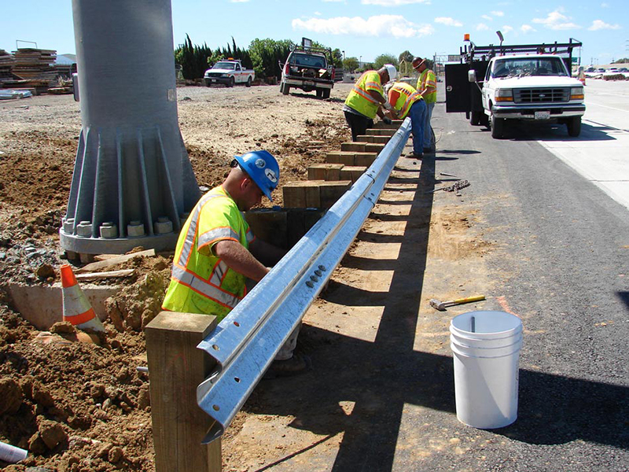
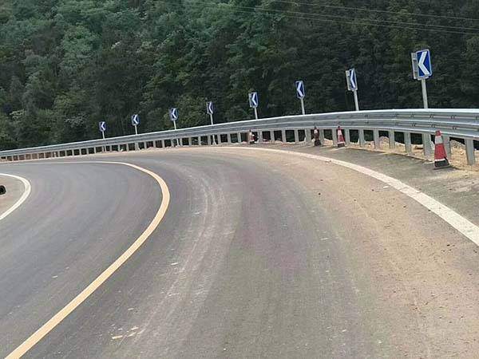

Product type 01
W-beam guardrail systems
The most widely used highway guardrail type. Standard roadside and median barrier route for broad project demand across markets.



Standard specifications
- Beam type: W-beam, standard profile
- Thickness: 2.5mm ‚Ä?4.0mm (project dependent)
- zinc coating: ‚â?100g/m¬≤ hot-dip galvanized
- Standard:符合 JT/T 132-2014 / AASHTO M180
- Post type: C-shaped steel posts, I-beam posts
- Block/spacer: Steel spacer blocks or wooden blocks
- Application: Highway roadside, median, bridge approach
Common project uses
National highways, provincial roads, expressways, urban road median and roadside, bridge transition sections.
Export supply scope
Panels, posts, spacer blocks, bolts, end terminals, washers, and full accessory package. Mixed loading and full container support.